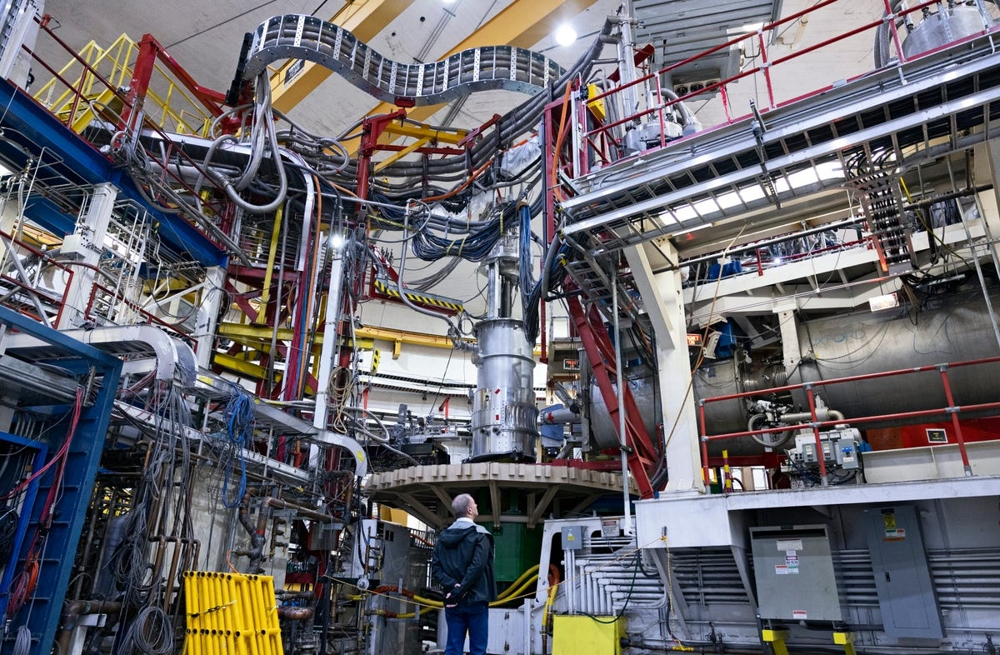

Richard Hurd. "The AI Energy Shock." Licensed under Creative Commons Attribution-ShareAlike 3.0 Unported.
Artificial intelligence, mostly used to refer to Large Language Models (LLMs) and Generative Image/Video models, is often framed as a revolutionary technological advancement that promises efficiency across nearly every sector of society. However, behind their sleek interfaces and instant responses lies a massive physical infrastructure that is slowly draining our natural resources.
Generative AI poses a significant environmental threat, considering its high energy and water consumption. Immediate policy action to mandate the usage of renewable energy is necessary to avoid accelerating extreme climate change.
Energy & Carbon Cost
Generative AI relies on massive data centers for training and inference (running queries), driving unprecedented energy demand. Global data center electricity consumption reached about 460 terawatt-hours (TWh) in 2022, equivalent to the 11th largest national consumer worldwide. Projections show this surging significantly, with estimates up to around 1,050 TWh by 2026, ranking data centers among the top global electricity users. In fact, data centers are the fifth largest electricity users globally, between Japan and Russia (Zewe, MIT News, 2025).
AI is a primary driver: Power demand from AI systems alone reached up to 23 gigawatts (GW) by the end of 2025. This translates to carbon emissions of 32.6 – 79.7 million tons of CO₂ in 2025, roughly matching New York City's annual emissions (~52 million tons) (de Vries-Gao, 2025). Training a single large model like early GPT versions consumed over 1,287 megawatt-hours (enough to power 120 U.S. homes for a year) and emitted hundreds of tons of CO₂. Inference now dominates as billions of daily queries add up, often relying on fossil-fuel-heavy grids (Noble and Berry, 2024; GAO, 2025).
These impacts increase reliance on non-renewable sources and accelerates extreme climate change, undermining global sustainability goals without rapid intervention.
Visitor7 "Google Data Center, The Dalles". Licensed under Creative Commons Attribution-Share Alike 3.0 Unported.
Water Consumption & Resource Strain
Beyond electricity, generative AI's infrastructure demands enormous water amounts for server cooling and indirect power generation (e.g., thermoelectric plants). AI systems' water footprint reached an estimated 312.5–764.6 billion liters in 2025, which is comparable to global annual bottled water consumption (~446 billion liters) (de Vries-Gao, 2025). A single median text prompt in efficient systems uses about 0.26 mL (roughly five drops), but scaled to billions of interactions, the total is staggering (Miller, 2025).
Data centers in water-stressed regions exacerbate shortages, with evaporative cooling consuming up to several liters per kWh. Indirect water use from fossil-fuel electricity also adds far more strain. Combined with energy demands, our current water usage threatens our ecosystem, local supplies, and food security in vulnerable areas (UNEP, 2025; Kanungo, 2024).

Aileen Devlin | Jefferson Lab "The recirculating electron accelerator inside Hall C". Licensed under Public Domain (CC0).
Solutions
Mitigating generative AI's impacts requires multi-level action. Better hardware optimization and on-device processing have reduced per-prompt energy/water use dramatically (e.g., 33x energy drop in some models from 2024-2025) (Miller, 2025). Companies can shift to renewables and improvize cooling methods (e.g., closed-loop systems) (UNEP, 2025).
However, voluntary measures fall short amid explosive growth. Standardized impact reporting and regulations accompanied by mandatory disclosures (e.g., EU-style energy efficiency rules) are essential. Governments should mandate renewable energy sourcing for AI infrastructure and incentivize green innovation to prevent rebound effects where efficiency spurs more use (GAO, 2025; de Vries-Gao, 2025).
Generative AI poses a significant environmental threat through high energy and water consumption. Immediate policy action to mandate renewable energy is necessary to avoid accelerating extreme climate change. As we only have one home, taking care of it must take priority over the unchecked advancement of digital technology.
"Climate Change" by Kai Stachowiak. Licensed under Public Domain (CC0).
Works Cited
Adam Zewe | MIT News. “Explained: Generative AI’s Environmental Impact.” MIT News | Massachusetts Institute of Technology, news.mit.edu/2025/explained-generative-ai-environmental-impact-0117.
de Vries-Gao, Alex. “The carbon and water footprints of data centers and what this could mean for artificial intelligence.” Patterns (New York, N.Y.) vol. 7,1 101430. 17 Dec. 2025, doi:10.1016/j.patter.2025.101430
“AI Has an Environmental Problem. Here’s What the World Can Do about That.” UNEP - UN Environment Programme, www.unep.org/news-and-stories/story/ai-has-environmental-problem-heres-what-world-can-do-about.
Kanungo, Alokya. “The Real Environmental Impact of AI.” Earth.Org, 5 Mar. 2024, earth.org/the-green-dilemma-can-ai-fulfil-its-potential-without-harming-the-environment/.
Noble, Gordon, and Fiona Berry. “Ai’s Environmental Footprint: How Much Energy Does It Take to Run CHATGPT?” Planet Detroit, 2 Oct. 2024, planetdetroit.org/2024/10/ai-energy-carbon-emissions/.
Office, U.S. Government Accountability. “Artificial Intelligence: Generative AI’s Environmental and Human Effects.” Artificial Intelligence: Generative AI’s Environmental and Human Effects | U.S. GAO, www.gao.gov/products/gao-25-107172. Accessed 12 Dec. 2025.
Miller, Carrie. “The Real Environmental Footprint of Generative AI: What 2025 Data Tell Us.” Online Learning Consortium, 4 Dec. 2025, onlinelearningconsortium.org/olc-insights/2025/12/the-real-environmental-footprint-of-generative-ai/.